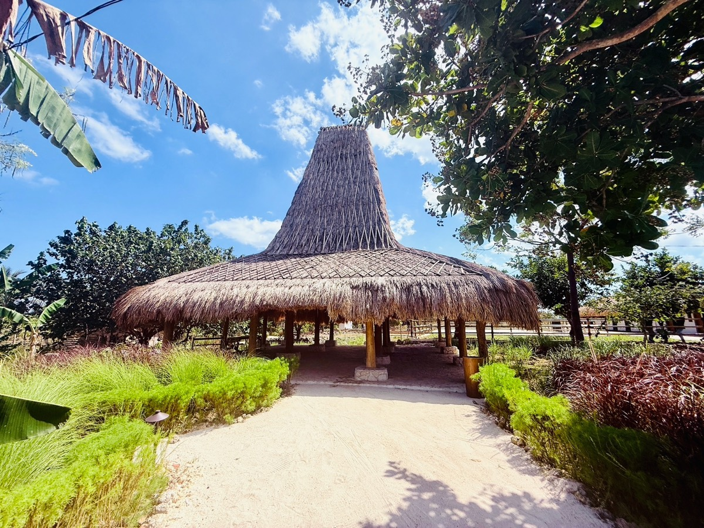
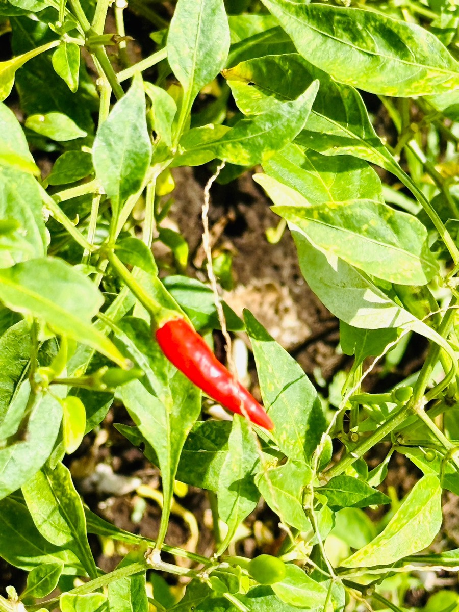
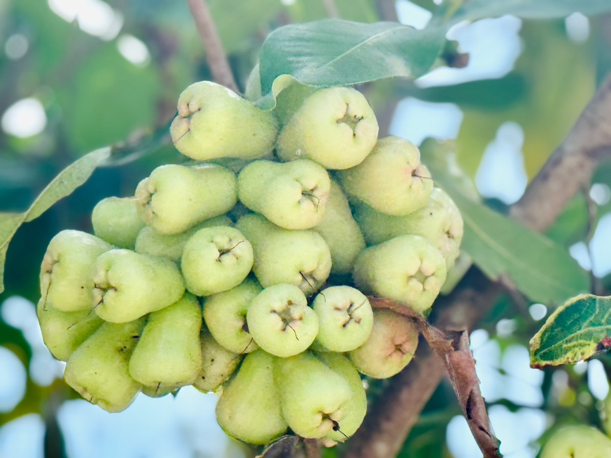
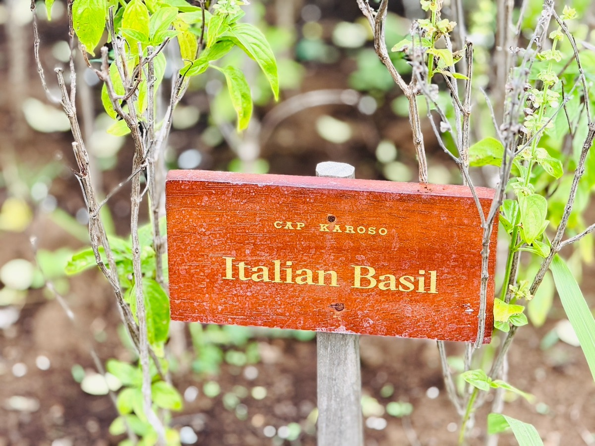
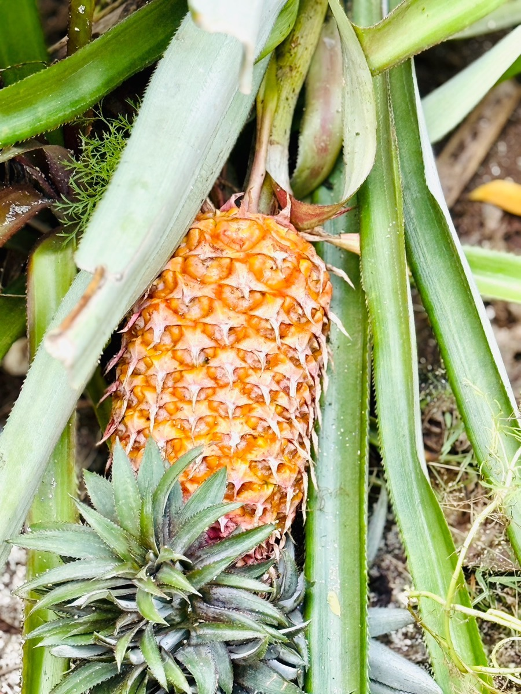
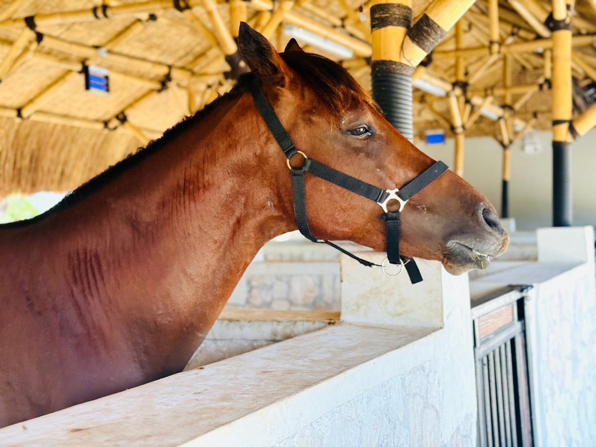
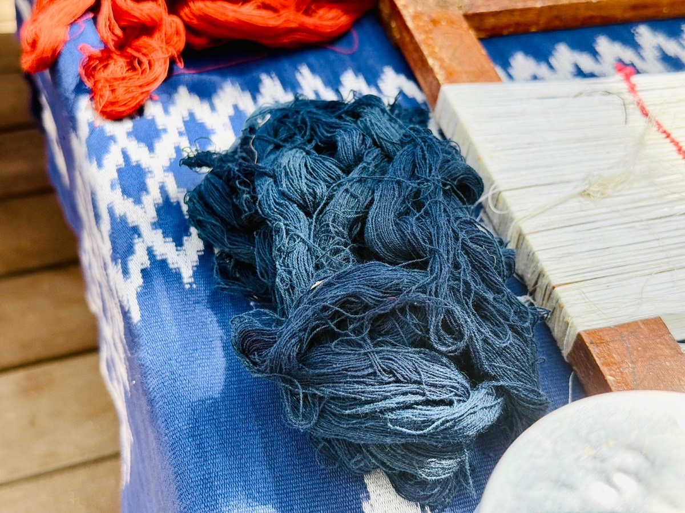
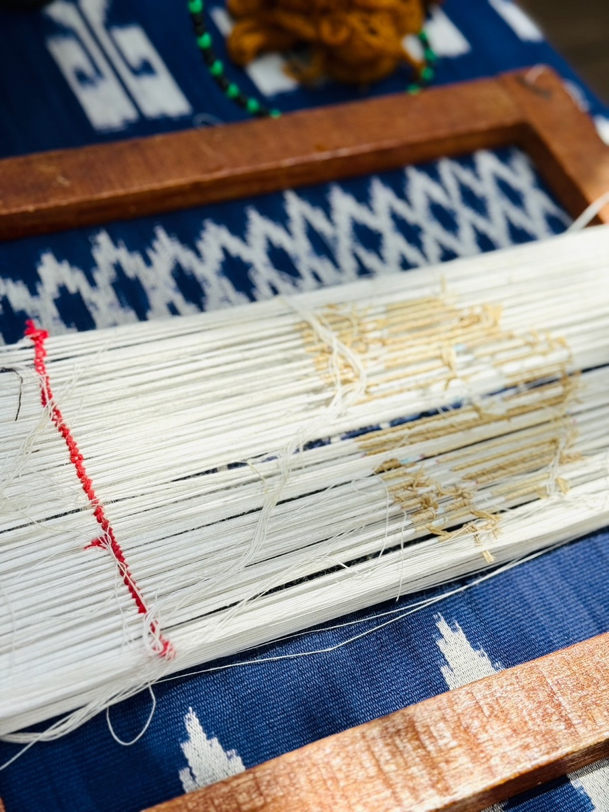
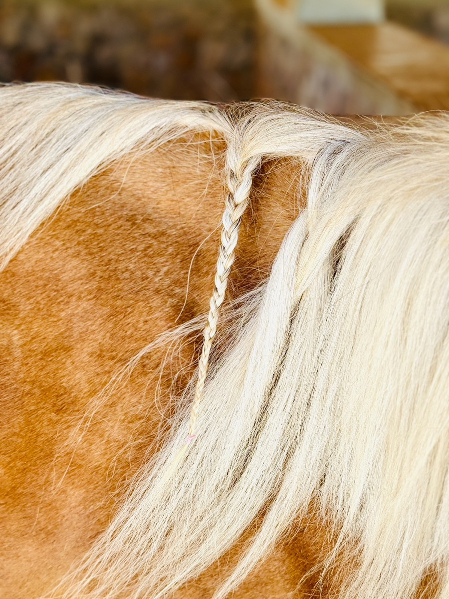

The Training House &
the Local Growers
The farm manager runs the farm, the resort's landscaping and the stables. The walk starts at a traditional house built as a training centre. In the busy season it hosts guest workshops, ikat weaving among them. The rest of the time it is for local farmers.
Once a month the resort brings farmers from nearby villages here to learn good agricultural practice, permaculture and composting. Once a week the farm team visits their fields to see how it's going. Then the resort buys what they grow for the staff canteen and the restaurants. The scheme began the previous November.
"We want to encourage the local people that to grow vegetables is very prestigious and very promising for the future, because in five and ten years ahead there will be a lot of resorts here and they will need fresh vegetables."
— The farm manager
Five farmer groups are in the programme so far: three around Kodi, one in town and one at Waikabubak in the hills. They grow on a rota so the harvests don't all land at once, and each area grows what suits it:
- Kodi: long beans and leaf vegetables — spinach, mustard greens, papaya flowers.
- Waikabubak: cabbage, which likes the cooler, higher ground.
- Town: tomatoes.
Fruit is the next problem to solve. The farm has bananas and papayas, but they are seasonal, and the manager is looking for growers to supply more. One group in Waikabubak already grows bananas, papayas and watermelons.
Two Houses,
a Breakfast's Worth of Eggs
The eggs at breakfast had come from here that morning. Almost all the eggs the restaurants use come from the farm, but some are still bought in, mostly for baking. The bedding in the houses is changed every two weeks and goes straight onto the compost.

The meat birds are raised from chicks on rice bran, maize and vegetable scraps from the kitchens. They are ready in a few weeks, and then the farm waits for the chef to ask for one.
Nothing Wasted:
Compost, Eggshells, Rice Water
The farm makes compost three ways: in the chicken houses, in open heaps, and in a wormery. What it can't compost, it ferments.

Eggshells are collected from the restaurant and the canteen and turned into a fertiliser for their calcium.
Worm tea, the liquid that drains from the wormery, is collected and sprayed on the plants.
Rice-washing water from the canteen is fermented for a week, then used as a feed.
"We try to make it holistic — to use everything from our hotel in our farm."
The canteen feeds almost 200 staff, which is why the farm alone can't keep up and the local growers matter.
More is planned. A waste-sorting building comes next, along with new quarters for the pigs and buffalo. The resort has bought a glass crusher and is getting a plastic crusher and a wood chipper. The idea is to recycle on site and then teach waste management in the villages too.
Dill Among the Tomatoes,
Galangal Asleep
The restaurant garden is laid out as an edible landscape. Tomatoes are planted with dill, which keeps pests off and goes into the kitchen as well. A pond is being dug for fish and water plants. In the nursery, lettuce, aubergine, tomato and basil seedlings wait to go out to the beds. Celery and some of the basil grow under shade cloth, because the dry-season sun is too strong for them.

The walk through the beds turns into a tasting, with something new every few steps:
- Marigolds, for the spa.
- Jarak, a decorative plant that isn't safe to eat.
- Local oregano, chewed for stomach ache.
- Japanese cassava and breadfruit, "very soft, like bread".
- Pandan, which the bar uses in drinks, and soursop.
- Pineapples, growing out of the middle of the plant.
- Moringa: the leaves are dried to a powder for drinks and face masks, and the young pods go into soup.
- Water guava, which fruits three or four times a year.
- A flower brewed as tea, in purple, pink and white.
- Oleander, planted for colour and not to be eaten.
The turmeric and galangal beds look dead. They aren't. In the dry season the leaves wither while the rhizomes keep growing underground; in the rains the leaves take over again. Galangal and turmeric leaf go into beef rendang and curries; turmeric is ground for jamu, the herbal tonic, and drunk for its anti-inflammatory reputation.
The dry season suits fruiting vegetables. Japanese cucumbers — fewer stripes than the English kind — were doing well, and so were the chillies. They go into sambal, pounded with dried shrimp paste and lime juice. The group had already met it, unexpectedly hot, in a sandwich at the hotel.
Pollinating
by Hand
Asked about watermelons, the manager explains that seedless ones need hand pollination. Their first job was in plant breeding, doing the same for cucumbers to produce seed.

At five in the afternoon, they would pick the male flowers and keep them overnight somewhere humid, wrapped in newspaper. Between six and eight the next morning, they would dust the pollen onto the female flowers by hand and close them up. The fruit swelled, and the seed was harvested from it for the next crop.
"That's a lot of work," someone said. It is.
Sandalwood Ponies
& Buffalo
The stables are new. There are two horses, with two more on the way, for sunset rides, swimming with horses and riding lessons. The palomino is a Sandalwood pony, Sumba's own breed: small, strong and spirited, and it takes a lot of patient training before one is easy around people.

"When she feels very healthy, the colour is like this. But if the body is not going very well, it will be like this — with the spots. Spots means the stress."
— The farm manager
The resort also keeps three water buffalo: a bull, a cow and a calf. Nobody milks them. Their manure goes on the compost.
Four Regencies,
Many Languages
The second half of the day is a talk from a Sumbanese host from Tambolaka, near the airport, who has worked in a local museum. They are nervous to begin with — "this is like being a teacher, you need to be perfect" — and then talk for an hour.
The island is about 210 km long and divided into four regencies: East Sumba, five or six hours' drive away; Central Sumba; West Sumba; and Southwest Sumba, where the resort is. Each has its own languages, and Southwest Sumba alone has four. Kodi and the host's own language are different enough that speakers fall back on Indonesian to understand each other.
The south-west is dry. There are few rivers and almost no irrigation, so rice is planted when the rains come, usually from about November. Most Sumbanese are farmers.
There is no written history of Sumba before the outsiders came, only what parents tell their children; the host counts back 45 generations. When they went to Bali on a scholarship, people kept mistaking Sumba for Sumbawa, the neighbouring island. Part of the reason, they say, is that Sumba has long kept its culture to itself.
Buffalo, Bride Prices
& Marriage
Buffalo matter more than anything else on Sumba. They are killed at funerals, and the number depends on the family and how many people come to mourn. They are also the core of the bride price, paid by the groom's family to the bride's.

There is no fixed rate. Spokesmen for the two families negotiate it, and the price goes up with the bride's standing and education. A wedding the host knew of that month involved 45 animals. Some young men leave for other islands because they can't afford to marry at home.
The cost has a side effect. Divorce is rare, the host says, because a marriage that expensive is hard to undo, and a divorce is talked about all over the island. They see the good in it as well as the harm.
Clothes matter too. The host's blue cloth is plain, the style of their area; East Sumba's ikat is far more colourful and patterned. At weddings and funerals traditional dress is expected. Someone who has lived away for years and comes back in modern clothes will be noticed.
War, Heads
& Drums
The host is frank about the island's history of tribal war and head-hunting. They give two causes. One was language: when people from one area moved to another looking for land, nobody could talk to them, so they were taken for raiders after livestock. The other was belief. In Marapu tradition, human blood spilled on the land was thought to bring good harvests.
Heads were hung in the village as a warning, and skin was made into drums kept in the house as protection. The host says the last of these wars were within living memory.
The museum where the host worked had three drums made from human skin. "Every day when I cleaned the museum, I had goosebumps. Even after three years, almost every day I was a little bit scared."
The killing of people has stopped. The sacrifices haven't: animals now take their place, and their blood still goes onto the fields before planting.
Sandalwood
Island
In the 17th and 18th centuries Sumba was covered in sandalwood, and traders came for it: Portuguese, Chinese, Indian. They paid in metal and goods, and the island became known as Sandalwood Island. The trees were cut and sold until few were left. The Dutch came later as colonisers and stayed until the Japanese occupation, which ended in 1945. Most of the written history of the island, as the group pointed out, is the history of the people who came to take things from it.
Marapu:
Ina & Ama
Most Sumbanese are now Catholic or Protestant. Most also still keep Marapu, the old animist faith, alongside it. Each traditional village works like a church: it is where ceremonies happen, and where the ancestors are thought to live.

Marapu always comes in two: Ina, mother, and Ama, father. The peaks on the roofs of traditional houses carry two symbols, one for each. Ina is the gentle character and Ama the strong one, and a life needs both.
Each village has a priest, the rato, who is always a man. The role passes through the family, to a son or a nephew, but the host insists it is a gift from the ancestors rather than a job. The rato leads ceremonies in a ritual language that ordinary Sumbanese can't follow.
Offerings are made when something is needed, not daily as in Bali. Big village ceremonies come every few years, in October or November, last four or five days and need a great many buffalo, pigs and chickens.
The Pasola
& the Sea Worms
The host thinks the Pasola is unique in the world. (A quick search by the group turned up horse festivals in Spain, China and Japan, but none where the riders attack each other.) Two teams of horsemen, forty or more a side, gallop across a field and throw wooden spears at each other. The spears are blunt, and the targets are the riders, not the horses. People get hurt, and occasionally someone dies.

It takes place in February and March, at three places in West and Southwest Sumba, one of them about twenty minutes from the resort. The word comes from the Kodi language and means a fight. These days the riders are mostly teenagers out to show how tough they are.
A clever woman from Kodi married an important man from West Sumba. He went off for months to meditate, around the island, without telling her. She waited, then married another man. When the first husband came back, the two men fought over her.
She told them to fight on horseback instead. Then, horrified that someone might die because of her, she ran into the sea. Three nights later she came to her mother in a dream: come to the shore, she said, and you will see me in the worms.
The worms — the nyale — come up in a mass of blue, pink and other colours just before the Pasola, and how many appear says whether the harvest will be good. They are boiled with coconut oil and local basil. The host says they are delicious.
Stone
Graves
There are three kinds of grave. The simplest is a hole covered with stones. The most famous is the megalithic tomb: a great slab of stone cut in the hills and dragged to the village. Central Sumba uses white stone; the stone near the resort is different.
The tombs cost a fortune and can take a year or two to prepare. The slab is pulled by hand, by up to 300 people, none of them paid. Animals are killed for every day of hauling, so that everyone is fed. Today most graves are concrete. Some families still drag stone, not because they are rich, the host says, but because they want to.
Betel, Coffee
& How to Be a Guest
Sumbanese relatives greet each other by touching noses, not shaking hands, and then they share betel. Betel nut and betel pepper are chewed with lime powder until the mouth turns red, then spat out. Older chewers' teeth go dark. The host compares it to very strong coffee, and worries about how young some people start.
At a ceremony, a host does not ask a guest what they would like. You are given what there is: coffee for a man, often tea for a woman, betel for both, and the best food the house can find — the chicken first, even if it means borrowing the neighbour's. Asking would be rude.
And you can't refuse. If you don't want it, you take it anyway and pass it on to someone else later. At a funeral, especially, what you're given is a blessing.
"We don't need to go to a restaurant or a club. When we drink some coffee, when we eat betel, when we smoke at the same time — this is the good thing. The happiness."
— The workshop host